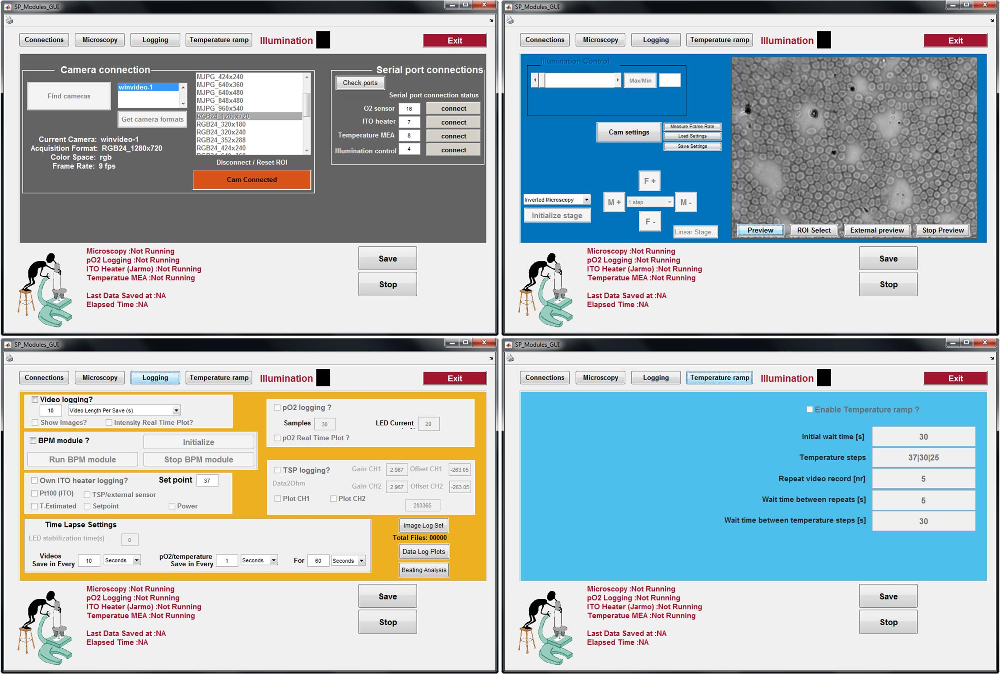
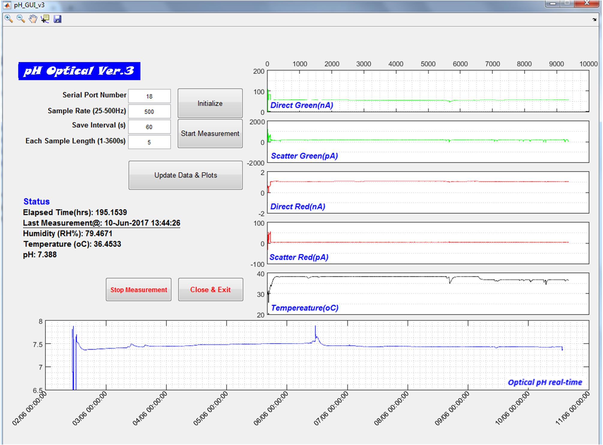

Optics and Biomedical engineering
Software development
Publications
GUI for iuCMP control
The GUI for iuCMP control. Windows for (a) hardware connections, (b) system initialisation and (c) data logging.


Online optical pH measurement program
Screenshot of GUI of MO-pH system. The signals marked with ‘Direct’ are the absorption signals while the ones marked with ‘Scatter’ are the scatter signals measured at 90 degree of the incident light. The real-time pH plot is shown in the bottom axis.